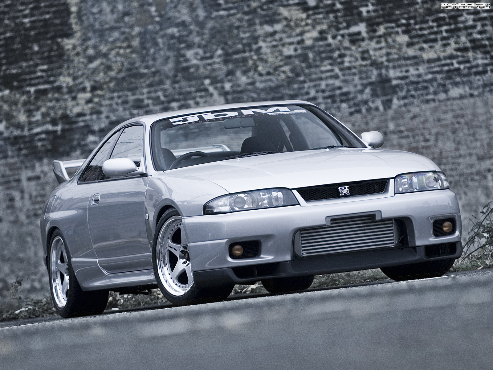

Nissan GTR R33
The Nissan GTR R33 is the successor to the R32 and the predecessor of the R34. It was produced from 1995 to 1998. The R33 is known for its improved aerodynamics, refined handling, and increased power. It is still a favorite among car enthusiasts and collectors.
Variants and Models
There were several different models of the R33, including:
- GT-R V-Spec: The V-Spec (Victory Specification) model featured an upgraded suspension, Brembo brakes, and an active limited-slip differential for improved handling.
- GT-R V-Spec N1: This model was designed for racing purposes, featuring an upgraded engine and lightweight components. Only a limited number of V-Spec N1 models were produced.
- GT-R LM: A limited edition, road-going version of the race car that competed in the 24 Hours of Le Mans. This model had unique aerodynamic features and was extremely rare.
- GT-R Nismo 400R: Produced by Nissan's in-house tuning division, Nismo, this model featured numerous performance upgrades, including a tuned engine producing 400 horsepower, enhanced suspension, and exclusive Nismo body parts.
Specifications
| Category | Details |
|---|---|
| Engine | 2.6-liter twin-turbocharged inline-six (RB26DETT) |
| Power | 276-400 hp |
| Torque | 260-347 lb-ft |
| Transmission | 5-speed manual |
| Drivetrain | All-wheel drive (ATTESA E-TS) |
| Weight | 3,146-3,417 lbs |
| Top Speed | 155-186 mph |
| 0-60 mph | 4.7-5.3 seconds |